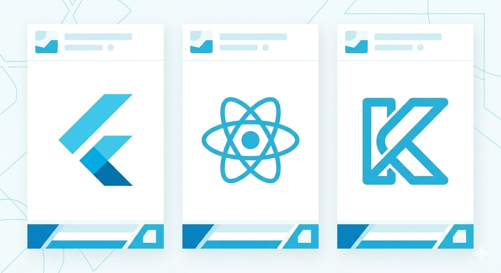

走完 iOS 和 Android 兩條原生路徑，你可能會冒出一個念頭：iOS 學 Swift、Android 學 Kotlin，要學兩套、寫兩份程式碼，有沒有更省力的方法？
有。這條路叫跨平台開發——寫一套程式碼，同時產出 iOS 和 Android 兩個 App。這篇是整個系列的補充篇，幫你搞懂跨平台是什麼、三大方案怎麼選、以及你到底該不該走這條路。
查證時間：2026-09-27。以下市佔、版本等資訊參考多個 2026 年的公開來源，技術演進快，實際數字請以最新官方與市場資料為準。內容已改寫以符合授權規範。
原生 vs 跨平台：先搞懂差別
- 原生開發（這系列教的）：iOS 用 Swift、Android 用 Kotlin，各寫一套。效能最好、最能用系統新功能、體驗最原生。代價是要學兩套、維護兩份。
- 跨平台開發：一套程式碼兩邊跑。省時、省維護、一個人也能顧兩個平台。代價是遇到深度系統功能仍要寫平台專屬程式碼、體驗偶爾要妥協、多一層框架要學。
沒有絕對誰好，看你的目標。接著看三個主流方案。

方案一：Flutter（Google）
- 語言：Dart。
- 特色：用自己的繪圖引擎，兩邊畫面長得一模一樣，視覺一致性最好。市佔在跨平台開發者中領先（2026 年約四成多）。
- 優點：畫面精緻、跨平台一致、開發速度快，很適合快速做出漂亮的 MVP。
- 要留意：得學 Dart 這個相對小眾的語言；因為自繪引擎，風格要特別調才會像各平台的原生外觀。
- 適合：想要一套程式碼、畫面完全統一、快速上線的人。
方案二：React Native（Meta）
- 語言：JavaScript / TypeScript。
- 特色：用原生元件呈現，開發者人才庫最大，生態系套件最豐富。
- 優點：如果你本來就會網頁前端（JS / React），上手最快、資源最多。
- 要留意：有時需要處理原生模組的橋接；複雜場景的效能調校要花心思。
- 適合：已經會 JavaScript / 前端、想沿用既有技能的人。
方案三：Kotlin Multiplatform（KMP，JetBrains / Google）
- 語言：Kotlin。
- 特色：主打共用商業邏輯、UI 各平台仍走原生（也可搭 Compose Multiplatform 連 UI 一起共用）。已在 Netflix、Cash App 等大型產品的正式環境使用，成長最快。
- 優點：保留各平台的原生體驗，同時把核心邏輯寫一次共用，妥協最少。
- 要留意：相對較新，UI 共用的成熟度視你採用的程度而定；學習曲線偏工程導向。
- 適合：重視原生體驗、又想減少邏輯重複的人；學過 Kotlin（Android）的人特別順。
快速對照
| Flutter | React Native | KMP | |
|---|---|---|---|
| 語言 | Dart | JS / TS | Kotlin |
| 畫面 | 自繪、兩邊一致 | 原生元件 | 各平台原生 UI |
| 最大優勢 | 視覺一致、做 MVP 快 | 人才多、生態豐富 | 保留原生體驗 |
| 適合誰 | 想快速做雙平台 | 已會前端 | 想共用邏輯又要原生感 |
那我到底該不該走跨平台？
給你幾個誠實的判斷：
- 如果你的目標是「一個人、同時做出 iOS + Android、省時省力」 → 跨平台（尤其 Flutter）通常划算，不用學兩套語言。
- 如果你已經會前端（JS） → React Native 幾乎是最順的選擇。
- 如果你已經走完這系列的 Android（會 Kotlin）、又很在意原生體驗 → KMP 值得看。
但有個重要前提，我一定要講：學跨平台，不代表可以完全不懂原生。
跨平台框架幫不了你的部分，恰恰是這系列前面教的那些——上架商店、憑證、權限、平台規範，這些照樣得懂。而且遇到深度系統功能（相機、感測器、特定 API），還是得寫平台專屬程式碼。所以「完全跳過原生、只學跨平台」通常會在某個環節卡住不知道底層發生什麼事。
這也是為什麼這個系列先帶你走原生：原生是根，把根紮好，之後不管用哪個跨平台框架，你都清楚底層在做什麼、出問題查得到方向。反過來只學框架、不懂底層，走不遠。
學跨平台大約要花多久？
如果你已經走完這系列的原生路徑（懂語言、畫面、資料、上架的觀念），再學一個跨平台框架，抓 4~8 週能上手做出雙平台 App——因為觀念都通了，主要是熟悉新框架的寫法和工具鏈。從零直接學跨平台的人會久一些，因為上架、除錯那些基本功還是要補。
系列總結：你的下一步
到這裡，整個「App 開發指南」系列就完整了：
- 總覽篇：工具、流程、上架、費用、賺錢的全貌。
- iOS 路徑 6 篇：Swift + SwiftUI，從環境到上架變現。
- Android 路徑 6 篇：Kotlin + Compose，對稱的完整路徑。
- 跨平台總覽（本篇）：Flutter / RN / KMP，一套程式碼兩邊跑的選擇。
如果之後大家對跨平台實作有興趣，我會考慮把這篇擴充成完整的 Flutter 實作系列——想看的話，歡迎留言或到 YouTube 告訴我。
不過最重要的，永遠是那句話：看再多教學，都不如親手做完一個 App。 挑一個你自己想解決的小問題，動手做，你已經有全部需要的地圖了。祝你做出屬於自己的第一個 App。🐾
系列導覽
- 📚 回到 App 開發完整指南 全系列目錄
- ⬅️ 上一篇：Android App 怎麼賺錢
- 🎉 這是系列最後一篇。回目錄挑任何一篇複習，或去做一個屬於你自己的 App 吧！